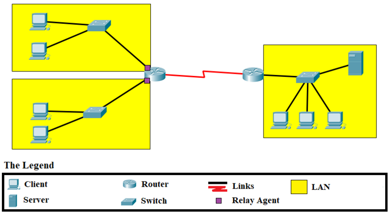

El Protocolo de Configuración Dinámica de Host (DHCP, por sus siglas en inglés) es un estándar de red que permite la asignación automática de direcciones IP y otros parámetros de configuración de red a dispositivos dentro de una red, facilitando la administración de la misma al eliminar la necesidad de configuraciones manuales
En el protocolo DHCP, el servidor utiliza el puerto 67/udp y el cliente el 68/udp.
DHCP discover: El cliente envía una petición a la dirección de broadcast 255.255.255.255 solicitando una configuración de red única dentro de la red en la que se encuentra.
DHCP offer: El servidor DHCP de la red responde la petición anterior enviándole al cliente (identificado por su dirección MAC) los parámetros de la red.
En principio podría terminar aquí, pero hay dos pasos más para evitar conflictos en el caso de que hubiera más de un servidor DHCP en la red:
DHCP request: El cliente confirma al servidor DHCP (identificado por su dirección IP) que va a utilizar los parámetros que éste le ha enviado.
DHCP acknowledgement: El servidor confirma los parámetros enviados y el tiempo de validez de la concesión de dirección IP (DHCP lease time).
Una vez que un cliente DHCP ha contactado con un servidor DHCP, a través de varios estados internos, negocia el uso y la duración de su dirección IP. La forma de adquisición de la dirección IP por el cliente DHCP se explica mejor en términos de un diagrama de transición de estados (llamado también máquina de estado finito) . La figura presenta este diagrama de transición de estados que explica la interacción entre el cliente y el servidor DHCP.
Antes de enviar el mensaje broadcast DHCPDISCOVER, el cliente DHCP espera por un tiempo aleatorio –entre 1 a 10 segundos– para evitar una colisión con otro cliente DHCP, como en el caso que todos los clientes DHCP se inicialicen al mismo tiempo al recibir todos energía a la vez (como una pérdida o interrupción de la electricidad).
SELECTING Después de enviar el mensaje broadcast DHCPDISCOVER, el cliente DHCP ingresa al estado SELECTING, donde recibe los mensajes DHCPOFFER de los servidores DHCP configurados para atenderlo. El tiempo que el cliente DHCP esperará por los mensajes DHCPOFFER depende de la implementación. Si el cliente DHCP recibe varias respuestas DHCPOFFER, elegirá una.
REQUESTING Aceptación de la asignación recibida
En reacción, el cliente DHCP enviará un mensaje DHCPREQUEST para elegir un servidor DHCP, el que contestará con un DHCPACK.
Como opción, el cliente DHCP controla la dirección IP enviada en el DHCPACK para verificar si está o no está en uso. En una red con broadcast, el cliente DHCP envía una petición ARP con la dirección IP sugerida para verificar que no esté duplicada. En caso de estarlo, el DHCPACK proveniente del servidor se ignora y se envía un DHCPDECLINE, con lo cual el cliente DHCP ingresa en estado INIT y vuelve a pedir una dirección IP válida que no esté en uso.
Cuando se acepta el DHCPACK proveniente del servidor DHCP, se colocan tres valores de temporización y el cliente DHCP se mueve al estado BOUND (asociado) .
El DHCPACK siempre trae consigo el valor de T3. Los valores de T1 y T2 se configuran en el servidor DHCP; de no ser así, se usan los valores por defecto siguientes:
El tiempo actual en que los temporizadores expiran se calcula añadiendo el valor del temporizador al tiempo en que se envió el mensaje DHCPREQUEST, el cual generó la respuesta DHCPACK.
Después de la expiración del temporizador T1, el cliente DHCP se mueve del estado BOUND al estado RENEWING (renovación) . En este último estado se debe negociar un nuevo alquiler para la dirección IP designada, entre el cliente DHCP y el servidor DHCP que originalmente le asignó la dirección IP. Si el servidor DHCP original, por algún motivo, no renueva el alquiler, le enviará un mensaje DHCPNACK y el cliente DHCP se moverá al estado INIT y intentará obtener una nueva dirección IP. En el caso contrario, si el servidor DHCP original envía un mensaje DHCPACK, éste contendrá la duración del nuevo alquiler. Entonces, el cliente DHCP coloca los valores de sus temporizadores y se moverá al estado BOUND.
Si el temporizador T2 (tiempo de reenganche) expira mientras el cliente DHCP está esperando en el estado RENEWING una respuesta sea DHCPACK o DHCPNACK proveniente del servidor DHCP original, el cliente DHCP se moverá al estado REBINDING. El servidor original DHCP podría no haber respondido porque estaría apagado o porque el enlace con la red habría caído. Nótese en las ecuaciones previas que T2 es mayor que T1, de modo que el cliente DHCP espera que el servidor original DHCP renueve el alquiler por un tiempo igual a T2 – T1.
Extensión de la concesión Al expirar el temporizador T2 (tiempo de reenganche), el cliente DHCP enviará un DHCPREQUEST a la red para contactar con cualquier servidor DHCP para extender el alquiler, con lo cual pasará al estado REBINDING. El cliente DHCP envía este mensaje broadcast DHCPREQUEST porque presume que, luego de haber esperado T2 – T1 segundos en el estado RENEWING, el servidor DHCP original no está disponible, por lo cual tratará de contactar con otro servidor DHCP para que le responda. Si un servidor DHCP responde con un DHCPACK, el cliente DHCP renueva su alquiler (T3), coloca los temporizadores T1 y T2 y retorna al estado BOUND. Si no hay servidor DHCP disponible para renovar alquiler luego de expirar el temporizador T3, el alquiler cesa y el cliente DHCP pasa al estado INIT. Nótese que el cliente DHCP intentó renovar el alquiler primero con el servidor original y luego con cualquier otro servidor en la red.
Expiración de la concesión Al acabar el alquiler (T3 expira), el cliente DHCP debe devolver su dirección IP y cesar toda acción con dicha dirección IP en la red. El cliente DHCP no siempre tiene que esperar la expiración del alquiler para terminar el uso de una dirección IP. Éste puede renunciar voluntariamente a una dirección IP, cancelando su alquiler. Por ejemplo, el usuario de un computador portátil podría conectarse a la red para una actividad particular. El servidor DHCP de la red podría colocar la dirección del alquiler por una hora. Suponiendo que el usuario acabe su tarea en 30 minutos, entonces se desconectará de la red al cabo de dicho lapso. Cuando el usuario se libera armoniosamente, el cliente DHCP enviará un mensaje DHCPRELEASE al servidor DHCP para cancelar el alquiler. La dirección IP ahora estará disponible.
Si los clientes DHCP operan en ordenadores que tienen disco duro, la dirección IP asignada puede ser almacenada en este dispositivo y, cuando la computadora reinicie sus operaciones, puede hacer una nueva petición usando esta dirección IP.
es una función que permite la comunicación entre clientes DHCP y servidores DHCP en diferentes subredes o redes separadas por enrutadores. El DHCP Relay es esencial cuando los clientes DHCP y los servidores DHCP no se encuentran en la misma red local o segmento de broadcast.
La función principal del DHCP Relay es retransmitir las solicitudes de los clientes DHCP a los servidores DHCP y luego reenviar las respuestas del servidor DHCP de vuelta a los clientes. Esto es necesario porque las solicitudes de DHCP son mensajes de difusión (broadcast), y estos mensajes no atraviesan las barreras de enrutamiento entre subredes.
 fuente: https://commons.wikimedia.org/wiki/File:DHCP_Terminology_-_en.png
El proceso de DHCP Relay implica los siguientes pasos:
1. Un cliente DHCP envía una solicitud de asignación de dirección IP (DHCPDISCOVER o DHCPREQUEST) como un mensaje de difusión en su propia subred local.
2. Un enrutador o un dispositivo configurado como un agente de retransmisión DHCP (relay agent) en esa subred intercepta la solicitud DHCP del cliente.
3. El agente de retransmisión DHCP toma la solicitud del cliente y la reenvía como un mensaje unicast al servidor DHCP configurado en la red de destino. En el proceso, el agente de retransmisión agrega información sobre la subred de origen.
4. El servidor DHCP recibe la solicitud y, al determinar la subred de origen del cliente, selecciona una dirección IP adecuada de su propio ámbito de direcciones IP y responde al agente de retransmisión.
5. El agente de retransmisión DHCP reenvía la respuesta del servidor al cliente DHCP original, que luego puede utilizar la dirección IP y la configuración de red proporcionadas por el servidor DHCP.